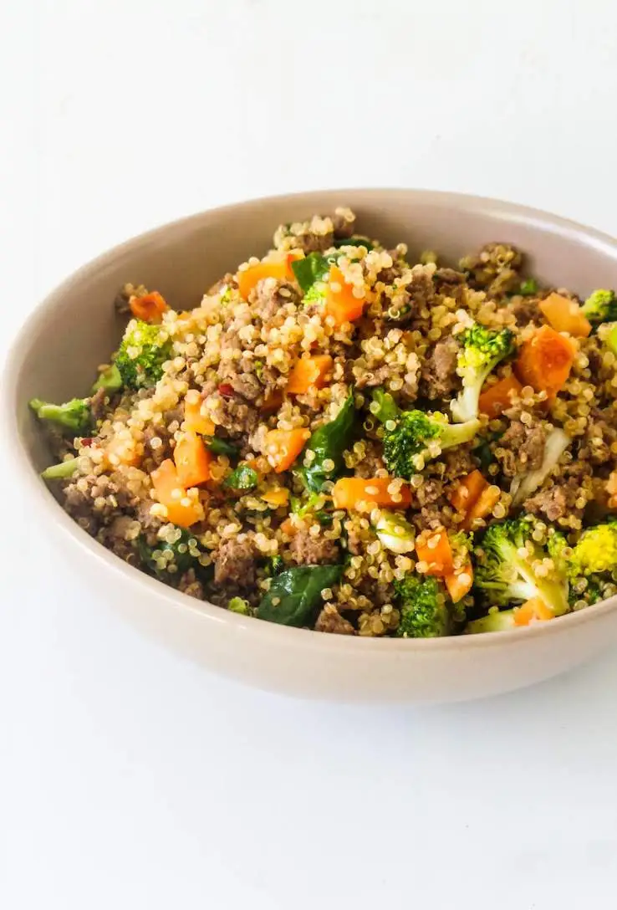
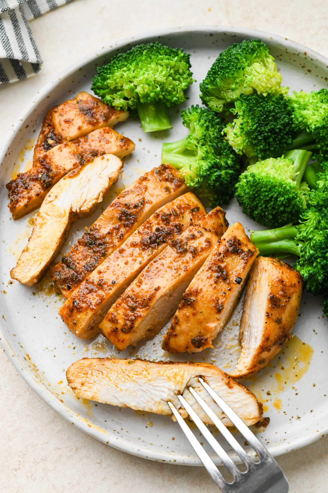

Minced beef with veggies and a quinoa bottom

Recipe decription
This recipe mixes minced beef with a plethora of vegatable and uses quinoa as a base. This recipe is enough for 3-4 people
Ingredients
- 500g minced meat
- 500g carrots
- 300g quinoa
- 1 onion
- 1 brocolli
- 2 cloves of garlic
- olive oil
- salt
- pepper
Steps
- Chop up the carrots on a cutting board and keep them in a bowl to keep your cutting board empty
- Peel the brown layers of the onion then chop it up, you can keep it on the cutting board
- Get 2 cloves of garlic and peel off the skin
- Use a wok and put enough olive oil to cover the bottom with a small layer of oil
- Turn on the stove on a low fire and when the wok get warm wipe the onion from the cutting board in the wok, also put in the garlic using a garlic press
- Stir the onion and the garlic
- Once the onion and the garlic are mixed but in the minced meat
- Stir the minced meat with the garlic and onion
- Add in some salt and pepper
- Continue to stir until the minced meat is no longer red
- Add in the carrots and mix them in nicely as well
- Chop of the branches of the brocolli. You can keep them in the now empty carrot bowl.
- Add in the brocolli with the stems facing towards to bottom
- Put a lid on the wok and let it cook for 12-15 minutes. You can add some water if you feel there is not enough moisture in the pan
- On the background cook 600ml hot water until it starts boiling
- Add in the quinoa and let it cook on a low fire for 12 minutes
- After you turn of the fire under the wok you can leave the lid on for a bit longer if you want to brocolli to be softer
- Enjoy food!
Bread with avocado and egg
Recipe description
This recipe is what I typically have for lunch. Its a good source of healthy fats and proteins as well as some fiber.
Ingredients
- 3 eggs
- 1 avocado
- 4 slices of whole grain bread
- baking butter
Steps
- Put some baking butter in the pan
- Break 3 eggs in a bowl
- Once the butter is done sputtering add the 3 eggs to the pan and wait 3-5 minutes
- Put the 4 slices of bread on a plate
- Cut the avocado in 2 pieces, gauge out the inside and distribute it evenly over 2 of the 4 slices
- Once the egg is done you can slices it in 2 halves and put it on the 2 pieces of bread with avocado
- Put the remaining 2 slices on top of the other 2 slices
- Enjoy food!
Chicken with black beans and quinoa

Description
This recipe is what I typically have for dinner. Quinoa again I know, to me it's like rice but better.
Since I already eat a red type meat for lunch I like to eat chicken for dinner. Since chicken by itself is kind of bland
and the rest of the meal isn't that flavour rich either i try to spice it up with some salt and pepper. The meal
is nutritional, it's easy to make, I like it. I usually cook at mass so this is enough for 2 people or prep for 2 days
Ingredients
- 200g quinoa
- 300g chicken (2 pieces of 150g)
- 400g beans (canned value)
- olive oil
- salt and black pepper
Steps
- Get the 2 pieces of chicken and make a large slice on the sides to fold them open to increase their surface area
- Get 1 tablespoon of ovila oil and cover the 2 pieces of chicken in it
- Cover the 2 pieces of chicken in salt and pepper
- Put the 2 pieces in a pan, put on a lid and cook them on a low to medium fire
- Flip both pieces from time to time until both sides start to get a litte brown then turn off the fire
- Cook 400ml hot water until it starts boiling
- Add in the quinoa and let it cook on a low fire for 12 minutes
- Put the black beens from the can straight into the pan and let it cook for 3-4 minutes on a low to medium fire
- Enjoy food!